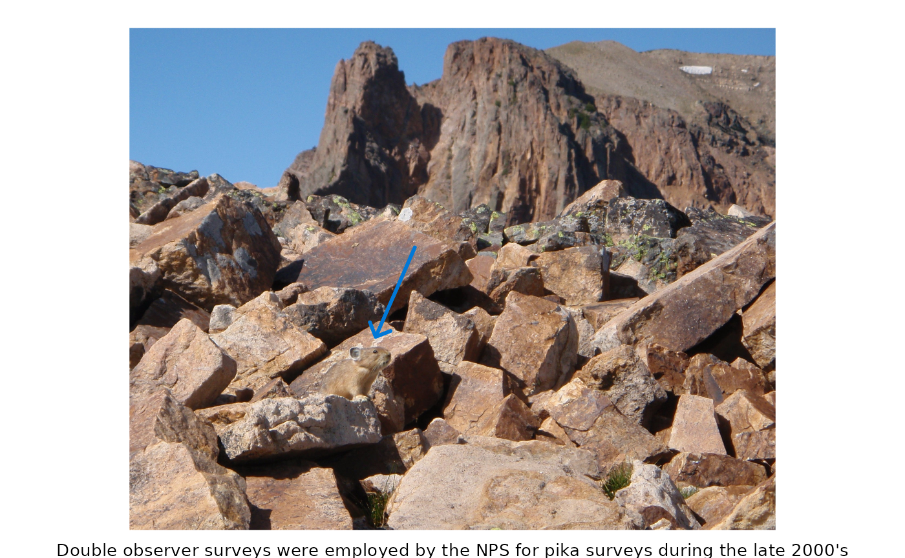
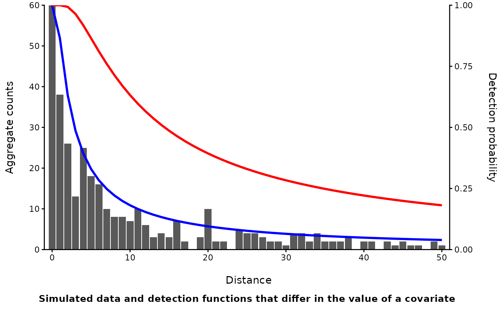

Capture-Recapture: Closed Population Abundance Estimation- Unmarked Individuals
Source:vignettes/articles/CCAUnmarked.Rmd
CCAUnmarked.RmdIntroduction
So far, the closed capture methods already discussed that require physically capturing and marking individuals, but that need not always be the case. There are many alternatives based on observing unmarked individuals. They are still considered closed capture models because they have many of the same assumptions and just like with the other closed capture methods discussed, you are trying to estimate abundance (or density) by estimating a capture probability. In the different approaches that follow, the term capture probability will generally be replaced with detection probability, given that animals are detected (seen or heard) rather than captured.
Historically, scientists and agencies would often perform counts in designated areas and used those counts as an index. The value of index counts is debatable (Anderson 20011), but converting an index count into a more robust estimate of abundance or density is straightforward, at least conceptually. You just need to estimate a detection or “capture” probability. So how do you do that?
The first step is you need multiple encounters. This can be accomplished by:
- Breaking up survey visits into smaller time blocks or sub-samples
- Performing a count or survey with multiple observers
- Performing the count or survey at the same location multiple times
There are specific designs for each approach and some may be better tailored for specific needs and survey conditions.
Regardless, all the approaches have several common assumptions:
- There is more than one count or observation obtained
- The population remains closed during the counts (see the overview for a reminder of what closure means)
- Individuals are identifiable and not double counted
The first two are not new, when moving from marked to unmarked individuals. Even the basic Lincoln-Petersen estimator requires a minimum of two capture events. The last one technically is true for all the other approaches too, but its often not explicit as marking animals usually makes it easier to identify them and avoid double counting. But it becomes more challenging to ensure when you aren’t physically marking them. More complex methods relax this assumption, but can be difficult to fit. It’s probably better to find an alternative method, if possible, if you aren’t likely to be able to avoid double counting individuals.
Capture recapture of unmarked individuals will most often occur as part of a transect survey of a fixed width or a fixed radius point count. This is necessary to meet the closure assumption. You have to define the spatial bounds of a survey area to have closure. This is implicit when you have a trapping grid as is common with camera traps or small mammal trapping. This does not mean that you can only survey one location or one transect, just that, at each point or along each transect for the duration of your survey (across multiple visits, observers, time,etc.), closure exists.
When working with unmarked animals, there is also a new caveat to “capture probability”. With marked animals, there is also the assumption that all animals have equal catchability, or differences can be modeled with covariates (like with behavioral responses, closed capture methods). When you are working with unmarked animals and reliant on a human observer, “catchability” is now comprised of two processes: availability and sightability. Availability is just whether all animals are behaving in a way that makes them observable, while sightability is whether the person making the observation can detect them. One way of thinking about it is, availability is a function of the behavior of the animal, and sightability is a function of the observer. Some approaches may better be able to separate the two while in others, it’s less apparent.
Finally, the methods below, like traditional capture-recapture methods, were primarily developed to estimate abundance, not model the relationship between abundance and environmental covariates. Still, they can be used within another framework, hierarchical models, to jointly model abundance (or density) while simultaneously accounting for imperfect detection. When moving to hierarchical models, some aspects will be similar, but there are important differences as well as limits. But to start, we will focus on the non-hierarchical approaches.
Methods
Time of detection (TOD) methods (different than time to detection methods) are probably the most analogous to traditional capture recapture methods. It is most often used with a single visit to a site, making it ideal when there are many sites to visit and few resources to make repeated visits. In short the approach is to:
- Break the single visit into several time intervals
- The intervals need not be equal, but it is easier if they are
- During each interval, record if an individual is detected
- You must be able to accurately keep track of individuals
This effectively creates a capture history like used in earlier capture-recapture models. Consequently, you can use software like Program MARK to estimate abundance. In R, the “unmarked” package includes several functions that can do the same, but also adopt a hierarchical approach such that you can also model abundance. Generally though, modeling abundance instead of just estimating it requires many more sites, even if using a single visit.
This approach may be best suited when there are a reasonably large number of sites to visit, the species is relatively easy to detect, and, observers can reliably keep track of individuals during the survey.
Double observer counts are another useful option when multiple visits
to a site are impractical or just not possible (i.e. aerial surveys,
remote back country surveys, etc.). Double observer surveys still
requires you be able to identify and keep track of individuals, but now
you are aggregating them in counts. There are two approaches to
estimating abundance from two observers:

Dependent observers:
- One observer acts as the “primary” observer and records all unique individuals and tells the second observer where they are.
- The second observer, simultaneously, records all individuals identified by the primary observer, as well as any individuals the primary observer misses. They DO NOT tell the primary observer about any individuals they see.
Independent observers:
- Each individual performs a survey separately, without communicating observations to one another.
- Once both are done, observers reconcile which individuals were observed uniquely, and which were observed by both.
These double observer methods have been used on data sets with as few as 10 sites (Nichols et al. 20002), making it potentially useful when data are limited, and the primary goal is to obtain an estimate of abundance, not model the effect of covariates.
Distance sampling takes a different approach to dealing with detection probability. In the above methods, everything that could affect detection is all wrapped up in the estimate of detection probability. Distance sampling focuses on a small part of that, namely how the distance between the observer and an animal affects the probability of detection.
Like the above methods, it’s applied to point counts or counts on transects, and you still need to ensure you aren’t double counting individuals. But now you need to record the distance from each individual to the observer. Distance sampling treats detection

probability purely as a function of distance from the observer. In it’s most simple form, covariates that might influence detection specifically affect how detection probability decays with distance.Some additional key assumptions are:
- Distances are measured accurately
- All individuals at the center of a point or directly on the transect are detected perfectly.
- Animals are distributed uniformly throughout the transect.
The effect of distance on detection explicitly and singularly deals with the part of detection probability associated with “sightability” or the ability of an observer to detect/ the observers perceptual range. The other approaches lump availability and sightability together. Thus, if you include a covariate such as cloud cover on detection probability because you know birds sing less frequently on cloudy days, or butterflies are less active, you aren’t necessarily stating the average detection probability is lower which may be what you want. Instead, you are suggesting that how your ability to detect birds at a range of distances has changed.
Removal models have been used in fisheries for a very long time with some mention to their use in terrestrial wildlife a bit later (Zippin 19583). Still, given how removal sampling is conducted and some of the early limitations, it never became widespread outside of fisheries. Under a removal model, an observer conducts repeated sampling events (just like capture occasions in closed-capture for marked individuals) but individuals are physically removed, rather than marked. Traditionally, this was applied to fish removals in a pond or lake. While this typically may have occurred as multiple visits to the same location on different days, we’ll limit our focus here to the use of removal models during a single visit.
When applying a removal design to point counts or a transect survey, you generally break your survey into (ideally) equal time intervals. This is similar to the TOD approach. However, rather than record whenever you detect an individual, you will only record the first time you detect that individual. All subsequent detections of that one individual are ignored. So just like in TOD where you are mentally “capturing” an individual, you can use the removal model to mentally “remove” individuals throughout a survey.
Like the other methods, it’s attractive because it can be performed by a single observer on a single visit to a site. It can be challenging if there are more than a few individuals, because you must keep track of whether each of them was detected before. Unlike TOD, but similar to distance sampling and the double observer method, you are assuming that all individuals have the same detection probability.
In another document we will go over extensions of the above models. The two major extensions are:
1.) Hierarchical abundance models (i.e. Royle and Dorazio 20064)
2.) Time-to-detection models (TTD; Strebel et al. 20215)
These extensions generally require much larger data sets (100’s of survey sites, rather than dozens), but offer a major advantages.
Rather than estimating an N summed across your sample sites in aggregate as we discussed here, hierarchical models allow you to estimate abundance at individual sites and incorporate covariates that may affect abundance. All the examples above have hierarchical versions, but may necessitate the use of MCMC sampling and Bayesian methods for inference (but not always). Hierarchical models also provide a new method for abundance estimation based on repeated visits to the same site, something not addressed above because such an approach does not exist outside of hierarchical modeling approaches.
Time-to-detection models have a longer history of use with occupancy modeling, but more recently have been used to estimate abundance. This framework is particularly suited for data collected from autonomous recorders given both the large number of survey sites needed to produce accurate estimates (>300), and the nature of continuous recording.
Summary
The methods above may appear outdated or limited, but are an important first step in estimating abundance for unmarked animals when traditional capture-recapture methods are not practical. These approaches utilize much of the same theory and assumptions as traditional capture-recapture but skip the need for physical capture.
Time of detection, double observer, and removal models do this by subdividing a single visit to a site into multiple encounter opportunities. Sightability and availability are generally combined into the composite measure of detection probability. Abundance or density is then estimated as the total among all surveyed locations. Distance sampling uses information about the distance from an observer to each individual detected to correct for issues with sightability, but not availability. Each approach has different strengths and weaknesses but all generally require you to be able to avoid double counting individuals and to keep track of individuals, all without being able to uniquely mark them.
Results can be very sensitive to violations of these assumptions and thus, despite their apparent relative simplicity, can be difficult to implement. More complex methods exist that can relax some assumptions, but generally require more data. Thus, these methods might best be used to account for imperfect detection, converting surveys that would otherwise produce a population index, to an estimate of abundance.
Single visit?a |
Multiple visits?b |
Heterogeneity in detection?c |
Observer differences?d |
Sightability/ Availability?e |
|
|---|---|---|---|---|---|
Time of Detection |
+ |
+ |
C |
||
Double Observer |
+ |
+ |
C |
||
Distance Sampling |
+ |
+ |
S |
||
Removal Methods |
+ |
+ |
C |
||
aCan be performed with a single visit | |||||
bCan be perfomed across multiple visits | |||||
cMethod accounts for heterogeneity in detection | |||||
dCan account for differences among observers | |||||
eHow are sightability/ availability handled; C= combined, S= sightability only | |||||